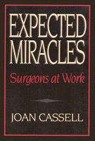

<body bgcolor="#FFFFFF" text="#000000" link="#0000FF" vlink="#CC0000" alink="#CC0000"><center><hr width="350" size="1" align="center" noshade>The world of surgeons from their own perspective<hr width="350" size="1" align="center" noshade><p><a href="https://cdcshoppingcart.uchicago.edu/Cart/ChicagoBook.aspx?ISBN=9780877228042&&PRESS=temple" target="_top">Buy this book!</a> | <a href="https://cdcshoppingcart.uchicago.edu/Cart/Cart.aspx?PRESS=temple" target="_top">View Cart</a> | <a href="https://cdcshoppingcart.uchicago.edu/Cart/Cart.aspx?PRESS=temple" target="_top">Check Out</a></p><p></p></center><!--none//--><h1>Expected Miracles</h1>
<H2>Surgeons at Work</H2>
<h3>Joan Cassell</h3>
<P>cloth 0-87722-804-3 $66.50, Jun 91, <FONT COLOR=#990033>Out of Stock Unavailable</FONT>
<br>paper 0-87722-838-8 $33.95, Jun 91, <FONT COLOR=#990033>Available</FONT>
<br>Electronic Book 1-43990-528-2 $33.95 <FONT COLOR=#990033>Out of Stock Unavailable</FONT>
<BR> 259 pp
</P><BLOCKQUOTE><I>"Joan Cassell's book is fair-minded and unsparing. A meticulous dissection of The Surgeon by an observer whose gaze is as sharp and precise as a scalpel. For me there was a shock of recognition on every page."</I>
<br>&#151<b>Richard Selzer</b>, M.D., Yale Medical School (retired), and author of <I>Mortal Lessons: Notes on the Art of Surgery</I> and <I>Letters to a Young Doctor</I><I></I></BLOCKQUOTE>
<p><I>Expected Miracles</I> explores the world of surgeons from their own perspective&#151how they perceive themselves, their work, colleagues, and communities. Recognizing that surgery is an art, a craft, a science, and a business, Joan Cassell offers, through poignant, painful, and thrilling descriptions, a vivid portrayal of the culture of surgery.
<p>Cassell has entered a realm where laypersons are usually horizontal, naked, and anesthetized. Using the central metaphor of the surgical "miracle," she illuminates the drama of the operating room, where surgeons and patients alike expect heroic performance. She takes us backstage to overhear conversations about patients, families, and colleagues, observe operations, eavesdrop on gossip about surgeons� performances, and examine the values, behavior, and misbehavior of surgeons at work.
<p>Said one Chief of Surgery, "You couldn�t have a good surgeon who didn�t believe in the concept of the Hero." Following this lead, Cassell explores the heroic temperament of those who perform surgical "miracles" and finds that the demands and pressures of surgical practice require traits that in other fields, or in personal interactions, are often regarded as undesirable. She observes, "surgeons must tread a fine line between courage and recklessness, confidence and hubris, a positive attitude and a magical one." This delicate balance and frequent imbalance is portrayed through several character sketches. She contrasts the caring attention and technical mastery of The Exemplary Surgeon with the theatrical posturing of The Prima Donna and the slick showiness and questionable morals of The Sleazy Surgeon.
<p>She also identifies the attributes that surgeons admire in each other. They believe that only peers can really evaluate each other, and, while doctors might not speak negatively about colleagues in public, the community of surgeons exerts considerable pressure on its members to perform competently.
<p>Unlike "doctor-bashing" chronicles, <I>Expected Miracles</I> seeks to understand the charismatic authority of surgeons, its instability, and its price-to surgeons and to patients.
<BR>&nbsp;<h2>Reviews</h2>
<p><I>"The most explicit account I have read about what surgeons do; what their experiences are like; what they are like; what they think about their successes and failures; and what an astonishing variety of experiences of being a surgeon there are. Written with great clarity and considerable grace.... I hope this book will become assigned reading for surgeons, surgical residents, medical students with interest in surgery, surgical nurses and technicians, and anyone who has to undergo a surgical procedure. A fine achievement."</I>
<br>&#151<b>Arthur Kleinman</b>, M.D., Ph.D., Department of Social Medicine, Harvard Medical School, Department of Anthropology, Harvard University
<p><I>"Joan Cassell gives us valuable insight into the mores, the high professional standards&#151as well as the lapse in and abuse of these standards&#151and the 'esprit de corps' of the 'fellowship of surgeons.' And she demonstrates that... this sub-profession does indeed form a Fellowship whose culture it is important for every prospective patient to understand."</I>
<br>&#151<b>James W. Fernandez</b>, Professor of Anthropology, University of Chicago
<BR>&nbsp;<h2>Contents</h2><P>
<p>Cast of Characters
<br>Preface: Some Words for Social Scientists
<br>Acknowledgments
<br>Introduction: The Surgical "Miracle"
<p>1. The Art, Craft, and Science of Miracles
<br><I>The Good Surgeon: Colleagues' Evaluations &#149
Looking Upward from the Table: A Patient's-Eye View &#149
Caring and Healing &#149
Can a Bad Person Be a Good Surgeon?</I>
<p>2. The Temperament of Surgeons
<br><I>"Be Ballsy: Do It!" &#149
Surgery as Ritual Drama &#149
The Price: The "Paranoia" of Surgeons &#149
The Price for Patients</I>
<p>3. The Fellowship of Surgeons
<br><I>The Fellowship &#149
Informal Learning during Training &#149
The Morality Play</I>
<p>4. Costing Out Miracles: The Business of Surgery
<br><I>Three Surgeons in Private Practice &#149
An Exemplary Surgeon in a Prepaid Health Plan &#149
"Full-Time" Men</I>
<p>5. A Day with a Compassionate Young Surgeon
<br><I>The Day &#149
The Burden</I>
<p>6. Let's Go for It!
<p>7. Deadly Surgical Sins
<br><I>Vices of Excess &#149
Generative Sins &#149
Defects, or Character Flaws &#149
Deficiencies &#149
Judging Sins</I>
<p>8. It's No Fun Anymore
<br><I>Fun and War Games &#149
No Fun &#149
"The Disenchantment of the World" &#149
The Bureaucratization of Charisma &#149
The Erosion of Charisma &#149
Horror Stories: The Patient as Enemy</I>
<p>9. Expected Miracles
<br><I>What of Patients? &#149
Expecting Miracles</I>
<p>Coda: The Research Process
<br><I>Beginnings &#149
Access Refused &#149
Entr�e &#149
Sample and Methods</I>
<p>Notes
<br>Glossary
<br>Bibliography
<br>Index
</P><BR>&nbsp;<H2>About the Author(s)</H2>
<table><tr><td valign="top"><img src="/tempress/authors/806_au.gif" height="90" width="75"></td><td width="100%" valign="middle"><p><b>Joan Cassell</b> is a research associate in the Department of Anthropology of Washington University and the editor of <I><A HREF="492_reg.html" TARGET="_top">Children in the Field: Anthropological Experiences</A></I> (Temple) and author of <I><A HREF="1777_reg.html" TARGET="_top">Life and Death in Intensive Care</A></I> (Temple).</P></td></tr></table>
<BR><H2>Subject Categories</H2>
<p><A HREF="/tempress/general.html" TARGET="_top">General Interest</a>
<BR><A HREF="/tempress/anthropology.html" TARGET="_top">Anthropology</a>
</p>
<p align="center"><a href="https://cdcshoppingcart.uchicago.edu/Cart/ChicagoBook.aspx?ISBN=9780877228042&&PRESS=temple" target="_top">Buy this book!</a> | <a href="https://cdcshoppingcart.uchicago.edu/Cart/Cart.aspx?PRESS=temple" target="_top">View Cart</a> | <a href="https://cdcshoppingcart.uchicago.edu/Cart/Cart.aspx?PRESS=temple" target="_top">Check Out</a></p><p><font face="Arial" size="1"><a href="copyright.html" onMouseOver="window.status='Web Copyright Policy';return true;" onMouseOut="window.status=''" title="Web Copyright Policy">&copy;</a> 2015 <a href="http://www.temple.edu" target="new" onMouseOver="window.status='Link to Temple University home page';return true;" onMouseOut="window.status=''" title="Link to Temple University home page">Temple University</a>. All Rights Reserved. http://www.temple.edu/tempress/titles/806_reg.html</font></p>